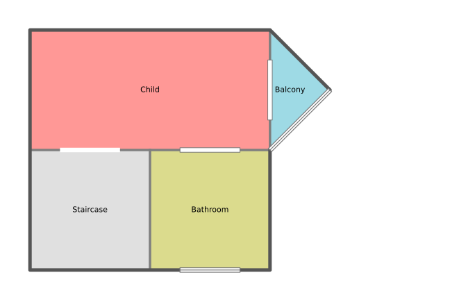
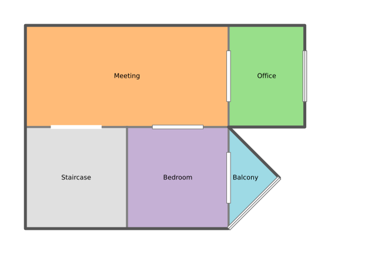
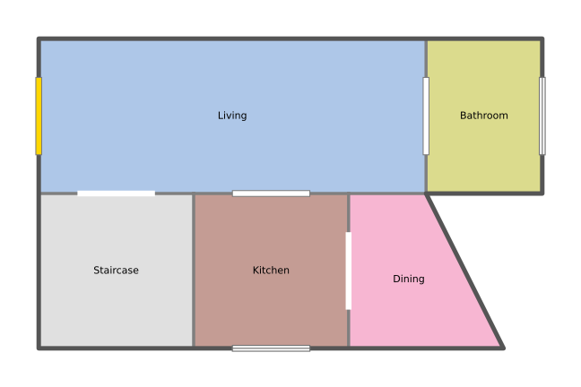
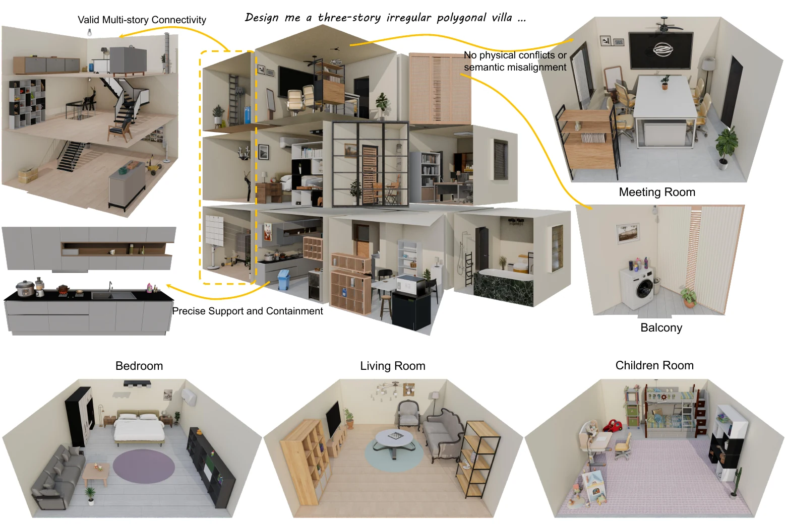
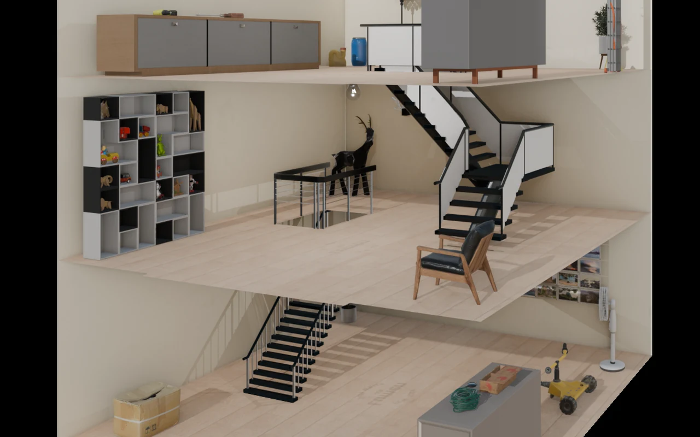
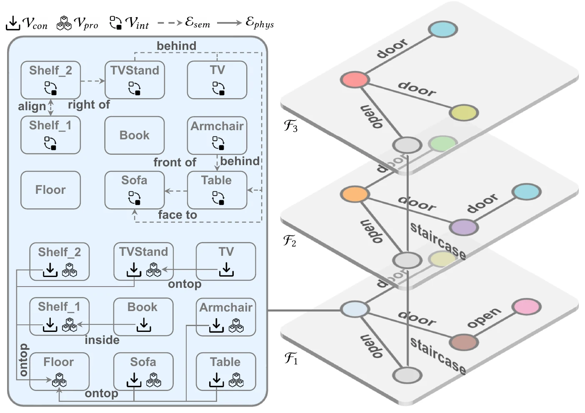
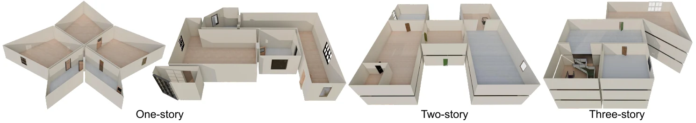
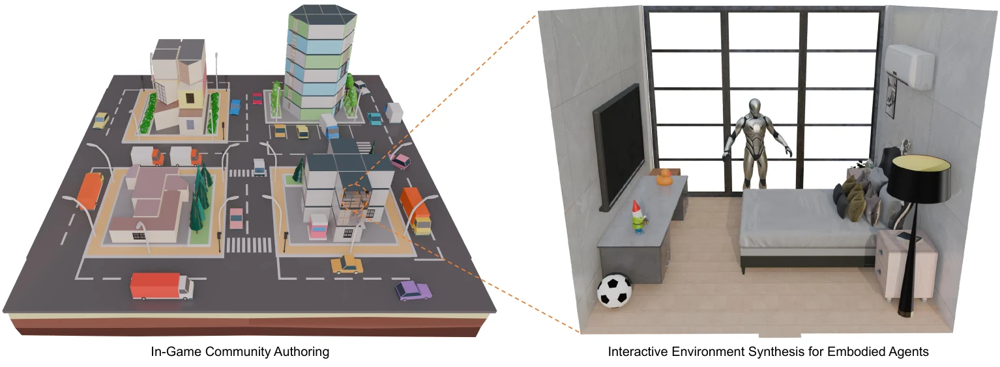

Building Map




Text-to-3D indoor scene generation
From text to connected, physically plausible villas.
Text2Villa connects macro-level multi-story layout generation with micro-level, physics-aware asset arrangement to create villa-scale 3D indoor environments from natural-language descriptions.
1Harbin Institute of Technology, Shenzhen 2Peng Cheng Laboratory 3Harbin Institute of Technology 4Harbin Institute of Technology, Suzhou Research Institute
Why Text2Villa
Existing text-to-3D methods predominantly operate on single rooms with rectangular boundaries. They struggle with vertical connectivity, arbitrary building footprints, and the continuous physical constraints that keep objects supported, contained, and collision-free.
Text2Villa introduces a hierarchical framework that first generates connected, polygonal multi-story foundations and then instantiates each room through an affordance-driven physical-semantic representation and closed-loop optimization.

Method
The pipeline separates architectural planning from asset instantiation, then closes the loop with geometric verification and multimodal semantic feedback.
A fine-tuned autoregressive generator converts text into parameterized multi-story foundations.
Support surfaces, containment cavities, and semantic relations become explicit graph constraints.
An MLLM and a geometry engine iteratively observe, evaluate, and modify each scene.
Interactive floor study
A single prompt becomes a connected hierarchy of floor layouts and room-scale scenes. The media slots are ready for final rotating floor videos.




Poster preview
Each room expands into an A-PSSG that distinguishes support providers, support consumers, and interactive objects while preserving semantic relations.

Results
Text2Villa follows detailed spatial instructions while enforcing physical and semantic constraints, from global room topology to fine-grained furniture arrangement.
Applications
Generated buildings and furniture remain explicit meshes that can move into content engines for rapid authoring and into interactive environments for embodied-agent training.

Reference
arXiv:2607.17145
@article{tang2026text2villa,
title={Text2Villa: Hierarchical Generation of 3D Indoor Environments
with Physics-Aware Analysis-by-Synthesis},
author={Tang, Xiang and Li, Ruotong and Fan, Xiaopeng},
journal={arXiv preprint arXiv:2607.17145},
year={2026}
}